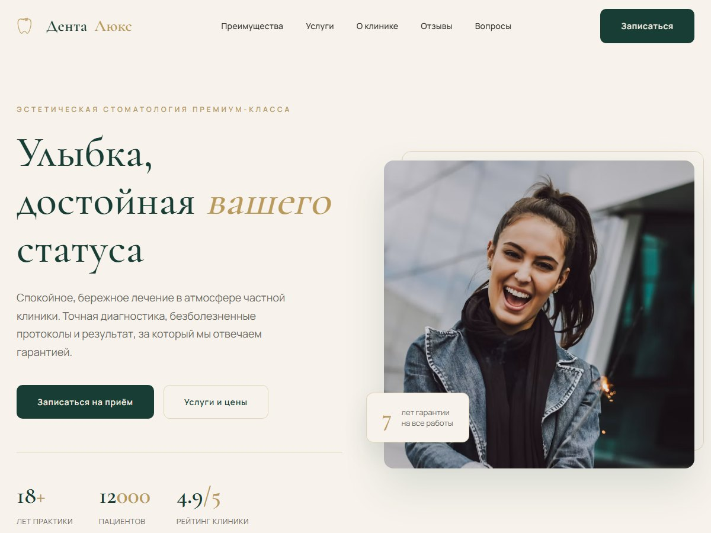
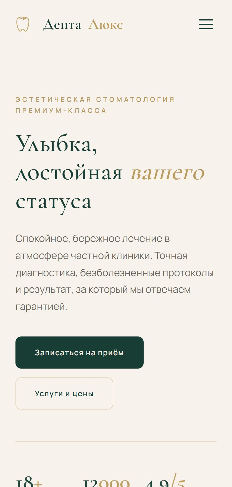

Лендинг · медицина
Сайт клиники с записью на приём
Клинике нужен был сайт, который объясняет уровень услуг и собирает записи. Первый экран отвечает на вопрос о цене и гарантии, дальше услуги с ценами, врачи, отзывы и форма записи.
1,8 с
загрузка первого экрана
5 блоков
с кнопкой записи
HTMLCSSJavaScriptадаптив
Открыть работу →